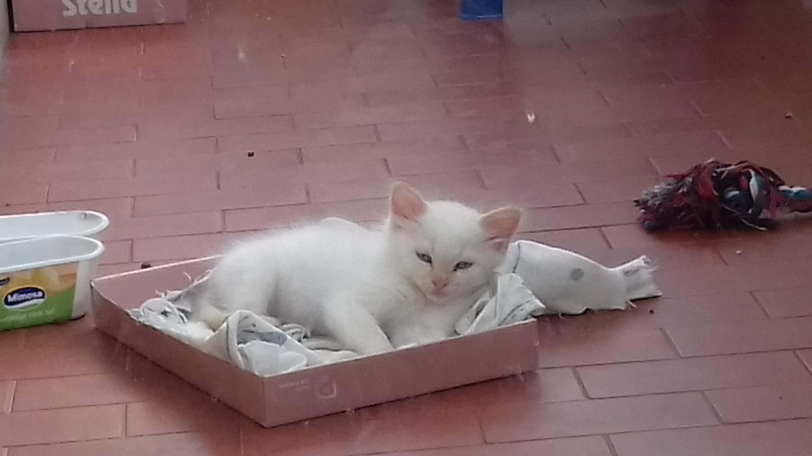
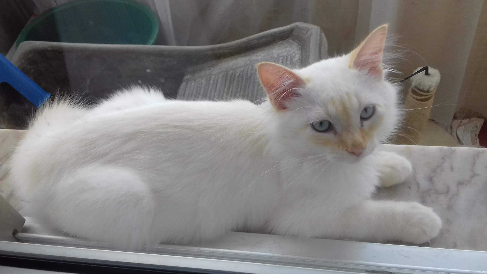
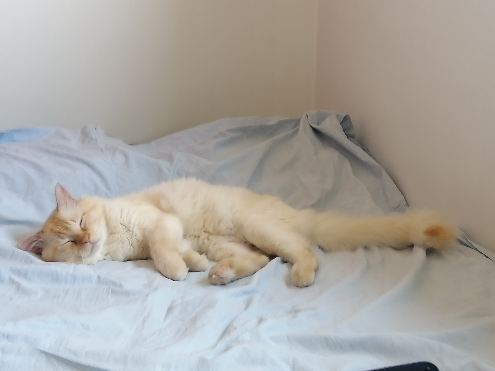

Meus Animais
É a foto mais antiga da minha cadela, M. (Sim, esse é o nome dela)
Primeira foto do meu gato, James. Nessa foto tinha só alguns meses.
também tenho peixes, mas a esses não dou nenhum valor emocional porque vivem pouco e não sou eu que cuido deles.
It´s sad but is true.
O James é persa, pelo menos foi o que nos disseram quando o adotamos, e ele realmente parece, em quanto que a minha cadela é raçada.
No final das contas, apesar de na foto o meu gato ser um bocado estrábico, ele cresceu e deixou de ser.

essa foto não é atual (hoje ele já tem 6 anos e nessa foto devia ter 1, penso eu) mas como eu sei que deves estar muito interessado em ver como ele está hoje, tens aí:

Acho que é fácil perceber que talvez eu tenha um preferido, mas não gosto de falar sobre isso -_-